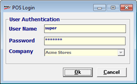
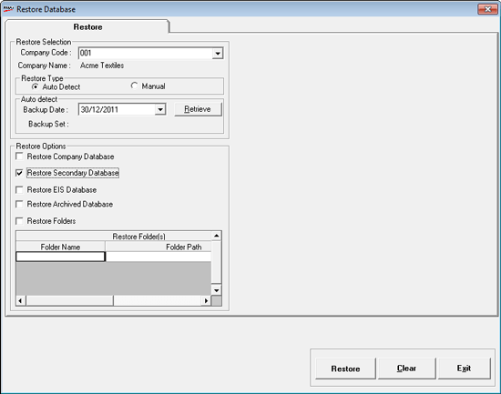
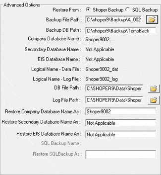

Use this option to restore files like Company Database, Secondary Database, EIS Database and Other Folders from the required backup file in the event of data loss or corruption.
How to reach: Housekeeping > Restore
The Login window is displayed to confirm the supervisor's login ID and password.

User ID: Enter supervisor’s login ID (Default is super).
Password: Enter supervisor’s password (Default is nothing).
The Restore Database window with Restore option activated is displayed.

Restore Selection
Company Code: Select the company code for which the databases are to be restored.
Company Name: Displays the company name of the company code selected.
Restore Type
Auto Detect: Select if you want the system to detect the latest available backup for restoring
Manual: Select if you want to provide the latest available backup for restoring
Note:
When the option Auto Detect is selected, you need to just specify the date and the system will search for the latest backup for that date. This makes it easy to restore backup of one company without entering the details.
The Manual option is used in exceptional situations like when you want to restore the backup which is an SQL backup or when you want to specify a different path for the restoration process.
Auto detect
Backup Date: Select the date for the system to consider all the backup files available for that date so that the latest amongst them can be considered for restoration.
Retrieve: Click to start the search for the latest available backup for the selected backup date. The backup file containing company database is chosen based on the created date/ time. An appropriate message is displayed whether the backup file is available for the selected date and company. If available, the name of the backup zip file is displayed.
Backup set: Displays the backup zip file name which the system has judged to be the latest.
Restore Options: Depending on the content of the backup zip file, the following check boxes are enabled
Restore Company Database
Restore Secondary Database
Restore EIS Database
Restore Archived Database
Restore Folders
Check to select the required database or folder for restoration.
Restore Folders: The Folder Name and Folder Path of all the available folders in the backup are displayed. You may select / un-select any folders depending on which folders have to be restored.
On selecting Manual as the Restore Type, the Advanced Options are displayed as shown.

Restore From: Select Shoper Backup to restore from the backup taken using Shoper. The SQL Backup option should be used if SQL backup files have to be attached to the respective company.
Backup File Path: Enter the backup file with the full path which has to be restored. You may click on to browse and select the file.
Backup DB Path: Displays the default path where the unzipped database files are copied until completion of the restore operation.
Company Database Name: Displays the company database name as available in the backup selected.
Secondary Database Name: Displays the secondary database name as available in the backup selected.
EIS Database Name: Displays the EIS database name as available in the backup selected.
Restore Company Database Name As: Enter the valid company data base name to which it has to be restored. Company database name entered is validated with Shoper configuration database before restore.
Restore Secondary Database Name As: Enter the valid Secondary data base name to which it has to be restored.
Restore EIS Database Name As: Enter the valid EIS database name to which it has to be restored.
When SQL Backup option is selected for Restore From, the following two fields are enabled:
SQL Backup Name: The file name entered in the field Backup File Path is displayed.
Restore SQL Backup Name As: Enter the valid SQL database name to which it has to be restored.